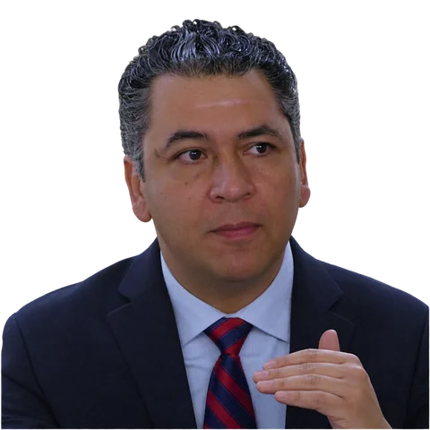

Dr. Arturo Pérez Mendoza
Director Regional del Departamento de Economía
Ciudad de México (CCM) arturo.perez@tec.mx
Doctor en Economía por la Universidad de Minnesota, con maestría en El Colegio de México y licenciatura en la UAM. Ha enseñado en la Universidad de Minnesota y en el posgrado de El Colegio de México. Ha publicado sobre comercio internacional y mercado laboral e imparte macroeconomía en el Tec.
- Comercio internacional
- Mercado laboral
- Macroeconomía
Unidades de formación impartidas
- Dinámica del Crecimiento Nacional y Regional
- Origen y Futuro del Panorama Macroeconómico
- Macroeconomía y Desarrollo Económico